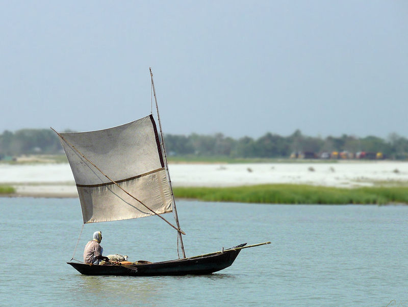

The Padma is a major river in Bangladesh.
It is the main distributary of the Ganges,
flowing generally southeast for 120 kilometres
(75 mi) to its confluence with the Meghna River
near the Bay of Bengal.The city of Rajshahi is
situated on the banks of the river.
